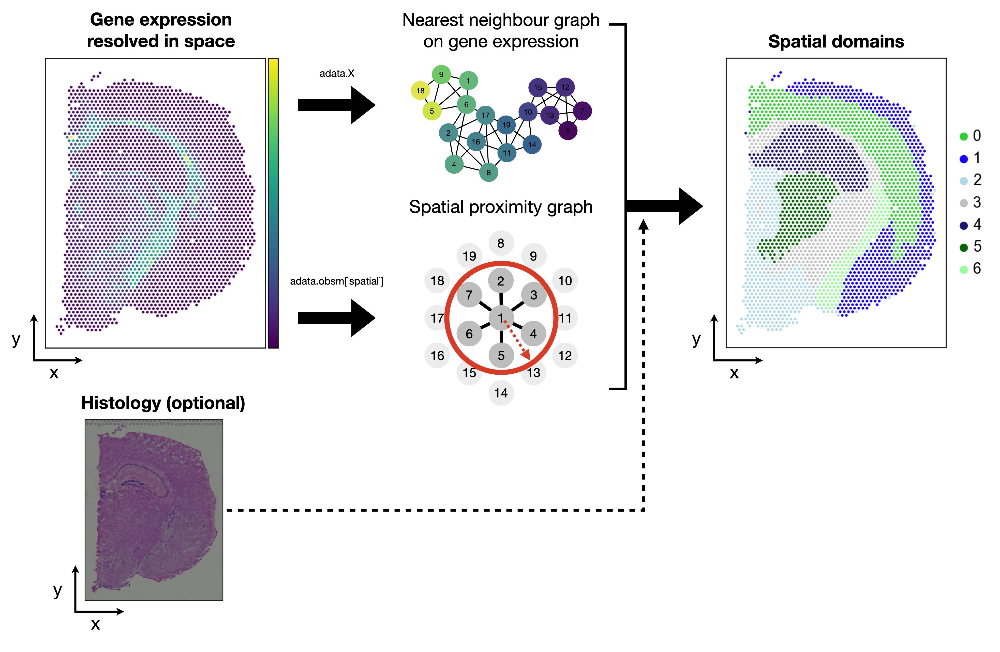

30. 空间域#
关键要点
空间域（spatial domain）是一类聚类，它既反映点（spot）或细胞在基因表达上的相似性，又反映它们在空间上的邻近程度。
用于识别空间域的方法，还可以纳入空间组学技术所能提供的组织学（histology）信息。
我们展示了如何在 Squidpy 中通过结合最近邻图与空间邻近图来识别空间域，以及如何使用 SpaGCN。
环境设置
安装 conda:
在创建环境之前，请确保 conda 已安装在您的系统中。
保存 yml 内容:
将 yml 选项卡中的内容复制到名为
environment.yml的文件中。
创建环境:
打开终端或命令提示符。
运行以下命令：
conda env create -f environment.yml
激活环境:
创建好环境后，使用以下命令激活它：
conda activate <environment_name>
替换
<environment_name>，名称就是在environment.yml文件中指定的那个。在 yml 文件里，它看起来像这样：name: <environment_name>
验证安装:
通过运行以下命令，检查环境是否创建成功：
conda env list
name: spatial
channels:
- defaults
- conda-forge
dependencies:
- conda-forge::python=3.12.12
- conda-forge::scanpy=1.12
- conda-forge::leidenalg
- conda-forge::pytorch-cpu
- conda-forge::pip
- pip:
- squidpy==1.8.1
- SpaGCN==1.2.7
- SpatialDE==1.1.3
- tangram-sc==1.0.4
- cell2location==0.1.5
TL;DR：我们概述了用于分析空间组学数据的各种空间数据分析方法
30.1. 动机#
在分析空间组学数据集时，我们可能希望在数据中识别 空间模式 ，也就是识别那些会随 空间而变化的特征。空间组学数据不仅包含通常的“细胞 × 基因”矩阵，还包含可用来描述并预测数据中目标特征的正交信息，例如组织图像和空间坐标。
识别细胞类型或状态是最早的数据分析任务之一，因为它能让我们从数据中提出关键假设。这通常是通过基于特征空间中数据点之间某种相似性来对数据进行聚类来完成的。完成这项任务最常用的方法之一，是在数据的（低维）表示上构建一张最近邻图，然后在该图上做社区发现（community detection）。对于空间组学数据，这种方法可以很容易地扩展，使其同时考虑数据在坐标空间（而不仅仅是特征空间）中的相似性。我们可以把这项任务称为“空间域的识别”，因为它在聚类识别中同时纳入了基因相似性和空间相似性。
针对不同的底层思路，人们开发了多种识别空间域的模型。它们大体可以分为两类方法：第一类对基因表达的空间依赖关系进行建模，第二类则额外纳入从组织学图像中提取的信息。
{kind=link}

图30.1 空间域是同时兼顾基因表达相似性与空间邻近性的聚类。相关方法还可以额外纳入组织学图像信息。#
第一组的例子如下:
Squidpy 的空间域 [Palla et al., 2022]
隐马尔可夫随机场（HMRF） [Dries et al., 2021]
BayesSpace [Zhao et al., 2021]
第二组的例子如下:
SpaGCN [Hu et al., 2021]
stLearn [Pham et al., 2020]
在本笔记本中，我们将演示如何在 Squidpy 中计算空间域，以及如何应用 SpaGCN。
30.2. 环境设置和数据#
我们先加载本教程和数据集所需的软件包。
import scanpy as sc
import squidpy as sq
sc.settings.verbosity = 3
sc.settings.set_figure_params(dpi=80, facecolor="white")
本教程使用的数据集由来自 1 只小鼠的 1 张组织切片组成，由 10x Genomics Space Ranger 1.1.0提供。数据集在 Squidpy 中进行了预处理，并为此数据集提供了加载函数。下面我们简要查看返回的 AnnData 对象。
adata = sq.datasets.visium_hne_adata()
adata
AnnData object with n_obs × n_vars = 2688 × 18078
obs: 'in_tissue', 'array_row', 'array_col', 'n_genes_by_counts', 'log1p_n_genes_by_counts', 'total_counts', 'log1p_total_counts', 'pct_counts_in_top_50_genes', 'pct_counts_in_top_100_genes', 'pct_counts_in_top_200_genes', 'pct_counts_in_top_500_genes', 'total_counts_mt', 'log1p_total_counts_mt', 'pct_counts_mt', 'n_counts', 'leiden', 'cluster'
var: 'gene_ids', 'feature_types', 'genome', 'mt', 'n_cells_by_counts', 'mean_counts', 'log1p_mean_counts', 'pct_dropout_by_counts', 'total_counts', 'log1p_total_counts', 'n_cells', 'highly_variable', 'highly_variable_rank', 'means', 'variances', 'variances_norm'
uns: 'cluster_colors', 'hvg', 'leiden', 'leiden_colors', 'neighbors', 'pca', 'rank_genes_groups', 'spatial', 'umap'
obsm: 'X_pca', 'X_umap', 'spatial'
varm: 'PCs'
obsp: 'connectivities', 'distances'
sq.pl.spatial_scatter(adata, color="cluster", figsize=(10, 10))
{kind=link}
30.3. Squidpy 的空间域#
在本节中，我们将用一个使用Squidpy的教学例子来说明这个方法，然后指出一个更先进的算法来完成这项任务。
为便于举例，我们使用 Visium 数据集。在这里，我们用“点（spot）”一词来指代存储在 AnnData 对象各行中的观测。首先，我们需要一种算法，能够在某个坐标空间（如基因表达空间和空间坐标）中对观测之间的相似性进行编码。最近邻图正是完成这一任务的可靠表示。下面我们分别计算空间坐标下的最近邻图，以及 PCA 坐标下的最近邻图。正如我们根据以下结果所看到的 adata.obsm['X_pca'] ，PCA 已经在数据集上完成，因此我们可以直接计算 KNN 图。
# nearest neighbor graph
sc.pp.neighbors(adata)
nn_graph_genes = adata.obsp["connectivities"]
# spatial proximity graph
sq.gr.spatial_neighbors(adata)
nn_graph_space = adata.obsp["spatial_connectivities"]
computing neighbors
using 'X_pca' with n_pcs = 50
finished: added to `.uns['neighbors']`
`.obsp['distances']`, distances for each pair of neighbors
`.obsp['connectivities']`, weighted adjacency matrix (0:00:08)
Creating graph using `grid` coordinates and `None` transform and `1` libraries.
Adding `adata.obsp['spatial_connectivities']`
`adata.obsp['spatial_distances']`
`adata.uns['spatial_neighbors']`
Finish (0:00:00)
其次，我们希望在两种表示中联合识别社区（即聚类）。一种直接的做法是：把两张图相加，然后在合并后的图上运行 Leiden。我们还可以通过一个超参数来权衡每张图的重要性 alpha.
alpha = 0.2
joint_graph = (1 - alpha) * nn_graph_genes + alpha * nn_graph_space
sc.tl.leiden(adata, adjacency=joint_graph, key_added="squidpy_domains")
running Leiden clustering
finished: found 17 clusters and added
'squidpy_domains', the cluster labels (adata.obs, categorical) (0:00:00)
下面我们用 Squidpy 可视化结果。第一个注释（cluster)是一种只基于基因表达相似性的聚类注释。
sq.pl.spatial_scatter(adata, color=["cluster", "squidpy_domains"], wspace=0.9)
{kind=link}
可以看到，这种做法本质上是在根据空间距离对聚类注释进行“平滑”。尽管它纯粹是一种教学性方法，但实践中确实有人采用过 [Chen et al., 2022]。我们建议读者进一步了解更有原则、更严谨的方法。
30.4. SpaGCN#
我们在这个教程中展示的第二个方法是 SpaGCN [Hu et al., 2021]。SpaGCN 是一种图卷积网络（graph convolutional network，GCN）方法，它在空间组学数据分析中综合利用基因表达、空间位置和组织学信息。SpaGCN 把基因表达、空间信息和组织学图像融合到一张无向加权图中。这张图刻画了数据中整体的空间依赖关系，可在图卷积框架中用于识别空间域。
我们现在演示如何在实践中使用 SpaGCN。我们首先加载相应的额外软件包：
import numpy as np
import requests
import SpaGCN as spg
from PIL import Image
如前所述，SpaGCN 还会把空间数据集的组织学图像作为额外输入。为此，我们额外从 10x Genomics 网站把高分辨率 tif 图像加载到笔记本中。SpaGCN 也可以在没有组织学信息的情况下使用，我们稍后会提到这一点。
img = np.asarray(
Image.open(
requests.get(
"https://cf.10xgenomics.com/samples/spatial-exp/1.1.0/V1_Adult_Mouse_Brain/V1_Adult_Mouse_Brain_image.tif",
stream=True,
).raw
)
)
/home/icb/anna.schaar/miniconda3/envs/spatial-book/lib/python3.9/site-packages/PIL/Image.py:3167: DecompressionBombWarning: Image size (132748287 pixels) exceeds limit of 89478485 pixels, could be decompression bomb DOS attack.
warnings.warn(
此教程中的空间 AnnData 对象已被处理。为了确保我们对 SpaGCN 应用正确且必要的数据处理，我们将 adata.X 重置为原始计数。
# requires raw data in X
adata.X = adata.raw.X
30.4.1. 将基因表达与组织学整合到一张图（graph）中#
SpaGCN需要将空间阵列坐标以及像素坐标传递给模型。阵列坐标通常存储在 adata.obs["array_row"] 和 adata.obs["array_col"]。像素坐标被存储在 adata.obsm["spatial"].
# Set coordinates
x_array = adata.obs["array_row"].tolist()
y_array = adata.obs["array_col"].tolist()
x_pixel = (adata.obsm["spatial"][:, 0]).tolist()
y_pixel = adata.obsm["spatial"][:, 1].tolist()
SpaGCN 首先把基因表达和组织学信息汇总成一张以邻接矩阵（adjacency matrix）形式表示的联合图。如果两个点在物理上邻近、且从图像中提取的组织学特征相似，就认为它们是相连的。相应的函数需要用户传入 x 和 y 像素坐标、图像，以及另外两个参数： beta 和 alpha.
beta在提取颜色强度时，用于确定每个点的面积。该值通常可以从adata.uns['spatial']获得。通常，Visium 斑点的大小为 55 至 100 \(\mu m\).alpha用于确定在计算点之间欧氏距离时赋予组织学图像的权重。alpha=1意味着组织学像素强度值与 (x, y) 坐标具有相同的尺度方差。
# Calculate adjacent matrix
adj = spg.calculate_adj_matrix(
x=x_pixel,
y=y_pixel,
x_pixel=x_pixel,
y_pixel=y_pixel,
image=img,
beta=55,
alpha=1,
histology=True,
)
Calculateing adj matrix using histology image...
Var of c0,c1,c2 = 96.93674686223055 519.0133178897761 37.20274924909862
Var of x,y,z = 2928460.011122931 4665090.578837907 4665090.578837907
30.4.2. 基因表达数据的预处理#
接下来，我们对基因表达数据执行一个基本的预处理策略：过滤掉在少于三个点中表达的基因。此外，对计数进行归一化并做对数变换。
adata.var_names_make_unique()
sc.pp.filter_genes(adata, min_cells=3)
# find mitochondrial (MT) genes
adata.var["MT_gene"] = [gene.startswith("MT-") for gene in adata.var_names]
# remove MT genes (keeping their counts in the object)
adata.obsm["MT"] = adata[:, adata.var["MT_gene"].values].X.toarray()
adata = adata[:, ~adata.var["MT_gene"].values].copy()
# Normalize and take log for UMI
sc.pp.normalize_total(adata)
sc.pp.log1p(adata)
normalizing counts per cell
finished (0:00:00)
30.4.3. SpaGCN 超参数#
作为第一步，SpaGCN发现特征长度尺度 \(l\)。这个参数决定了权重随距离衰减的快慢。为找到 \(l\),首先需要指定参数 \(p\) 它描述了由邻域贡献的总表达量所占的百分比。对于 Visium 数据，SpaGCN 建议： p=0.5。对于Slide-seq V2或MERFISH等捕获区域较小的数据，建议选择更高的贡献值。
p = 0.5
# Find the l value given p
l = spg.search_l(p, adj)
Run 1: l [0.01, 1000], p [0.0, 176.04695830342547]
Run 2: l [0.01, 500.005], p [0.0, 38.50406265258789]
Run 3: l [0.01, 250.0075], p [0.0, 7.22906494140625]
Run 4: l [0.01, 125.00874999999999], p [0.0, 1.119886875152588]
Run 5: l [62.509375, 125.00874999999999], p [0.07394278049468994, 1.119886875152588]
Run 6: l [93.7590625, 125.00874999999999], p [0.4443991184234619, 1.119886875152588]
Run 7: l [93.7590625, 109.38390625], p [0.4443991184234619, 0.7433689832687378]
Run 8: l [93.7590625, 101.571484375], p [0.4443991184234619, 0.5843360424041748]
Run 9: l [93.7590625, 97.66527343749999], p [0.4443991184234619, 0.5119975805282593]
Run 10: l [95.71216796875, 97.66527343749999], p [0.47760796546936035, 0.5119975805282593]
recommended l = 96.688720703125
如果已知组织中空间域的数量，SpaGCN 可以计算出一个合适的分辨率来生成相应数量的域。例如脑样本就属于这种情况：人们希望在空间切片中找到一定数量的皮层分层。如果域的数量未知，SpaGCN 会把分辨率参数在 0.2 到 0.1 之间变化，并选用使 Silhouette 分数最高的那个分辨率。
我们会把聚类数指定为示例数据集中存在的细胞类型数，并设置 n_clusters=15.
# Search for suitable resolution
res = spg.search_res(adata, adj, l, target_num=15)
Start at res = 0.4 step = 0.1
Initializing cluster centers with louvain, resolution = 0.4
computing neighbors
using data matrix X directly
finished: added to `.uns['neighbors']`
`.obsp['distances']`, distances for each pair of neighbors
`.obsp['connectivities']`, weighted adjacency matrix (0:00:00)
running Louvain clustering
using the "louvain" package of Traag (2017)
finished: found 10 clusters and added
'louvain', the cluster labels (adata.obs, categorical) (0:00:00)
Epoch 0
Res = 0.4 Num of clusters = 10
Initializing cluster centers with louvain, resolution = 0.5
computing neighbors
using data matrix X directly
finished: added to `.uns['neighbors']`
`.obsp['distances']`, distances for each pair of neighbors
`.obsp['connectivities']`, weighted adjacency matrix (0:00:00)
running Louvain clustering
using the "louvain" package of Traag (2017)
finished: found 13 clusters and added
'louvain', the cluster labels (adata.obs, categorical) (0:00:00)
Epoch 0
Res = 0.5 Num of clusters = 13
Res changed to 0.5
Initializing cluster centers with louvain, resolution = 0.6
computing neighbors
using data matrix X directly
finished: added to `.uns['neighbors']`
`.obsp['distances']`, distances for each pair of neighbors
`.obsp['connectivities']`, weighted adjacency matrix (0:00:00)
running Louvain clustering
using the "louvain" package of Traag (2017)
finished: found 14 clusters and added
'louvain', the cluster labels (adata.obs, categorical) (0:00:00)
Epoch 0
Res = 0.6 Num of clusters = 14
Res changed to 0.6
Initializing cluster centers with louvain, resolution = 0.7
computing neighbors
using data matrix X directly
finished: added to `.uns['neighbors']`
`.obsp['distances']`, distances for each pair of neighbors
`.obsp['connectivities']`, weighted adjacency matrix (0:00:00)
running Louvain clustering
using the "louvain" package of Traag (2017)
finished: found 16 clusters and added
'louvain', the cluster labels (adata.obs, categorical) (0:00:00)
Epoch 0
Res = 0.7 Num of clusters = 16
Step changed to 0.05
Initializing cluster centers with louvain, resolution = 0.65
computing neighbors
using data matrix X directly
finished: added to `.uns['neighbors']`
`.obsp['distances']`, distances for each pair of neighbors
`.obsp['connectivities']`, weighted adjacency matrix (0:00:00)
running Louvain clustering
using the "louvain" package of Traag (2017)
finished: found 15 clusters and added
'louvain', the cluster labels (adata.obs, categorical) (0:00:00)
Epoch 0
Res = 0.65 Num of clusters = 15
recommended res = 0.65
我们现在计算了所有必要的参数，可以初始化SpaGCN并设定 \(l\) 超参数。
model = spg.SpaGCN()
model.set_l(l)
接下来，我们用合适的分辨率训练模型，以识别 15 个空间域。
model.train(adata, adj, res=res)
Initializing cluster centers with louvain, resolution = 0.65
computing neighbors
using data matrix X directly
finished: added to `.uns['neighbors']`
`.obsp['distances']`, distances for each pair of neighbors
`.obsp['connectivities']`, weighted adjacency matrix (0:00:00)
running Louvain clustering
using the "louvain" package of Traag (2017)
finished: found 16 clusters and added
'louvain', the cluster labels (adata.obs, categorical) (0:00:00)
Epoch 0
Epoch 10
Epoch 20
Epoch 30
Epoch 40
Epoch 50
Epoch 60
Epoch 70
delta_label 0.000744047619047619 < tol 0.001
Reach tolerance threshold. Stopping training.
Total epoch: 79
我们现在预测数据集中每个细胞各自的空间域。此外，模型还返回属于其中一个域的每个细胞的概率。我们不会在这个教学中利用这些信息。
y_pred, prob = model.predict()
我们现在正将空间域保存到 adata.obs 并把它保存为分类变量（categorical），以方便绘图。
adata.obs["spaGCN_domains"] = y_pred
adata.obs["spaGCN_domains"] = adata.obs["spaGCN_domains"].astype("category")
让我们在空间散点图中查看结果，并将其与数据集中原始的注释进行比较。
sq.pl.spatial_scatter(adata, color=["spaGCN_domains", "cluster"])
{kind=link}
可以看到，该方法相当准确地识别出了空间域。有趣的是，这些域与原始注释吻合得相当好。不过，我们也能观察到少数离群点——有些点仍散布在数据集各处，没有被分配到同一个域。SpaGCN 提供了一个用于精修空间域的函数，下面我们就来演示。
30.4.4. 改进检测到的空间域#
SpaGCN 还包含一个可选的精修（refinement）步骤来改善聚类结果：它会检查每个点及其相邻点的域分配。如果某个点超过一半的相邻点被分到了不同的域，该点就会被重新标记为其相邻点的主要域。精修步骤只会影响少数几个点。一般来说，只有当预期数据集具有清晰的域边界时，SpaGCN 才建议进行精修。
为了进行精修，SpaGCN 首先计算一个不考虑组织学图像的邻接矩阵。
adj_2d = spg.calculate_adj_matrix(x=x_array, y=y_array, histology=False)
Calculateing adj matrix using xy only...
随后，这个邻接矩阵会与先前计算得到的域一起用于精修。
refined_pred = spg.refine(
sample_id=adata.obs.index.tolist(),
pred=adata.obs["spaGCN_domains"].tolist(),
dis=adj_2d,
)
我们现在把精修后的空间域保存到 adata.obs 并把它保存为分类变量（categorical），以方便绘图。
adata.obs["refined_spaGCN_domains"] = refined_pred
adata.obs["refined_spaGCN_domains"] = adata.obs["refined_spaGCN_domains"].astype(
"category"
)
让我们查看经过改进的空间域，并将其与原始空间域进行对比。
sq.pl.spatial_scatter(adata, color=["refined_spaGCN_domains", "spaGCN_domains"])
{kind=link}
可以看到，精修后的空间域不再出现离群点，不同域之间呈现出清晰的边界。下一步，就可以对识别出的空间域进行注释，或用它们来计算空间可变基因。
30.5. 参考文献#
Ao Chen, Sha Liao, Mengnan Cheng, Kailong Ma, Liang Wu, Yiwei Lai, Xiaojie Qiu, Jin Yang, Jiangshan Xu, Shijie Hao, Xin Wang, Huifang Lu, Xi Chen, Xing Liu, Xin Huang, Zhao Li, Yan Hong, Yujia Jiang, Jian Peng, Shuai Liu, Mengzhe Shen, Chuanyu Liu, Quanshui Li, Yue Yuan, Xiaoyu Wei, Huiwen Zheng, Weimin Feng, Zhifeng Wang, Yang Liu, Zhaohui Wang, Yunzhi Yang, Haitao Xiang, Lei Han, Baoming Qin, Pengcheng Guo, Guangyao Lai, Pura Muñoz-Cánoves, Patrick H Maxwell, Jean Paul Thiery, Qing-Feng Wu, Fuxiang Zhao, Bichao Chen, Mei Li, Xi Dai, Shuai Wang, Haoyan Kuang, Junhou Hui, Liqun Wang, Ji-Feng Fei, Ou Wang, Xiaofeng Wei, Haorong Lu, Bo Wang, Shiping Liu, Ying Gu, Ming Ni, Wenwei Zhang, Feng Mu, Ye Yin, Huanming Yang, Michael Lisby, Richard J Cornall, Jan Mulder, Mathias Uhlén, Miguel A Esteban, Yuxiang Li, Longqi Liu, Xun Xu, and Jian Wang. Spatiotemporal transcriptomic atlas of mouse organogenesis using DNA nanoball-patterned arrays. Cell, 185(10):1777–1792.e21, May 2022.
Ruben Dries, Qian Zhu, Rui Dong, Chee-Huat Linus Eng, Huipeng Li, Kan Liu, Yuntian Fu, Tianxiao Zhao, Arpan Sarkar, Feng Bao, Rani E George, Nico Pierson, Long Cai, and Guo-Cheng Yuan. Giotto: a toolbox for integrative analysis and visualization of spatial expression data. Genome Biol., 22(1):78, mar 2021.
Jian Hu, Xiangjie Li, Kyle Coleman, Amelia Schroeder, Nan Ma, David J Irwin, Edward B Lee, Russell T Shinohara, and Mingyao Li. SpaGCN: integrating gene expression, spatial location and histology to identify spatial domains and spatially variable genes by graph convolutional network. Nat. Methods, 18(11):1342–1351, November 2021.
Giovanni Palla, Hannah Spitzer, Michal Klein, David Fischer, Anna Christina Schaar, Louis Benedikt Kuemmerle, Sergei Rybakov, Ignacio L. Ibarra, Olle Holmberg, Isaac Virshup, Mohammad Lotfollahi, Sabrina Richter, and Fabian J. Theis. Squidpy: a scalable framework for spatial omics analysis. Nature Methods, 19(2):171–178, Feb 2022. URL: https://doi.org/10.1038/s41592-021-01358-2, doi:10.1038/s41592-021-01358-2.
Duy Pham, Xiao Tan, Jun Xu, Laura F. Grice, Pui Yeng Lam, Arti Raghubar, Jana Vukovic, Marc J. Ruitenberg, and Quan Nguyen. stLearn: integrating spatial location, tissue morphology and gene expression to find cell types, cell-cell interactions and spatial trajectories within undissociated tissues. bioRxiv, 2020. URL: https://www.biorxiv.org/content/early/2020/05/31/2020.05.31.125658, doi:10.1101/2020.05.31.125658.
Edward Zhao, Matthew R Stone, Xing Ren, Jamie Guenthoer, Kimberly S Smythe, Thomas Pulliam, Stephen R Williams, Cedric R Uytingco, Sarah E B Taylor, Paul Nghiem, Jason H Bielas, and Raphael Gottardo. Spatial transcriptomics at subspot resolution with BayesSpace. Nat. Biotechnol., jun 2021.
30.6. 贡献者#
30.6.2. 审阅者#
Lukas Heumos